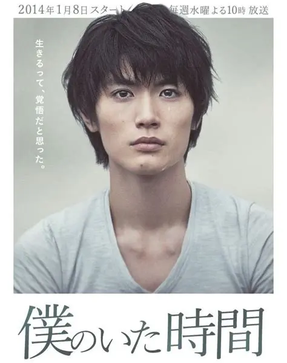
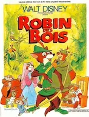
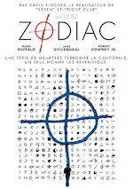

2024
Janvier
- 28 — N'oublier jamais de Michel Bussi
-
28 —
De la magie et des rêves

 Wish - Asha et la bonne étoile , Wonka
Wish - Asha et la bonne étoile , Wonka -
23 —
Magie, art, amour et délire complet

 L'ours montagne, Séraphine, ♡ C'était à Rome, La boutique fantastique
L'ours montagne, Séraphine, ♡ C'était à Rome, La boutique fantastique -
20 —
💖 Quatre courts-métrages d’animation
 ♡ A folded wish, ♡ Windup, ♡ Run Totti run, ♡ Achoo
♡ A folded wish, ♡ Windup, ♡ Run Totti run, ♡ Achoo -
14 —
Films pas tip top


 Spider-man : Across the spider-verse, Les piliers de la Terre, I give my first love to you, Les sous-doués passent le bac, Les Bronzés font du ski
Spider-man : Across the spider-verse, Les piliers de la Terre, I give my first love to you, Les sous-doués passent le bac, Les Bronzés font du ski -
14 —
Trois films d’animation
 ♡ La maison des égarées, Ron débloque, ♡ Magical DoReMi : À la recherche des apprenties sorcières
♡ La maison des égarées, Ron débloque, ♡ Magical DoReMi : À la recherche des apprenties sorcières -
07 —
Des questions sans réponse


 Dream scenario, Le monde après nous, The Fabelmans
Dream scenario, Le monde après nous, The Fabelmans
2023
Décembre
-
31 —
Noël, encore, action comique et romance foireuse
 Un château pour Noël, ♡ 9 chatons pour Noël, The family plan, Pretty Woman
Un château pour Noël, ♡ 9 chatons pour Noël, The family plan, Pretty Woman -
30 —
💖 Quatre films excellents
♡ Coup de foudre à Notting Hill, ♡ Nimona, ♡ Vampire humaniste cherche suicidaire consendant, ♡ Le rêve de l’okapi
-
21 —
Autres films visionnés
 L’ascension, ♡ A timeless Christmas, The family camp
L’ascension, ♡ A timeless Christmas, The family camp -
17 —
Marathon ciné !
 Oppenheimer, Un stupéfiant Noël, Class 1984, Noël au chalet, In love and deep water, How to fall in love by Christmas
Oppenheimer, Un stupéfiant Noël, Class 1984, Noël au chalet, In love and deep water, How to fall in love by Christmas -
09 —
Noël et hypnose
Noël à Candy Cane Lane, ♡ Noël en Écosse, Hypnotic
- 09 —  💖 Boku no Ita Jikan, série sortie 2014
-
07 —
Animation, Poney de Noël et thriller
♡ Trois frères Noël et un couffin, Léo, ♡ Robin des bois, Zodiac
Novembre
-
25 —
Autres films sympas
Le Noël surprise d’Emily, Please don’t destroy the treasure of Foggy Mountain
-
19 —
 Upload, série débutée en 2020
Upload, série débutée en 2020
-
19 —
💖 Panoplie de « Poney de Noël »


 ♡ Un Noël so British, ♡ The Royal Nanny, ♡ Il faut sauver la boutique de Noël, Noël à la ferme
♡ Un Noël so British, ♡ The Royal Nanny, ♡ Il faut sauver la boutique de Noël, Noël à la ferme - 19 — La nostalgie de l’Ange d’Alice Sebold
- 19 (édité) — 💖 Pour un garçon de Nick Hornby
-
18 —
 🶠Akai Ito, série sortie 2008
🶠Akai Ito, série sortie 2008